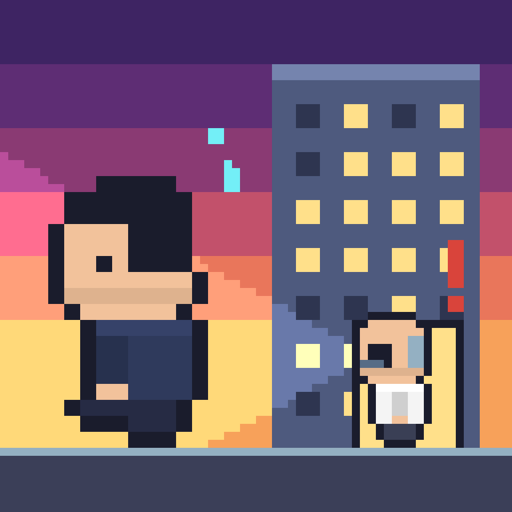
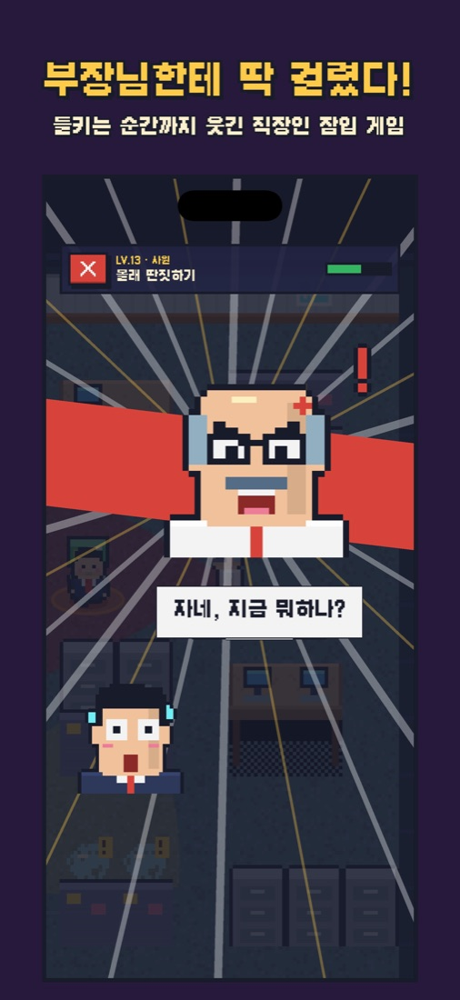
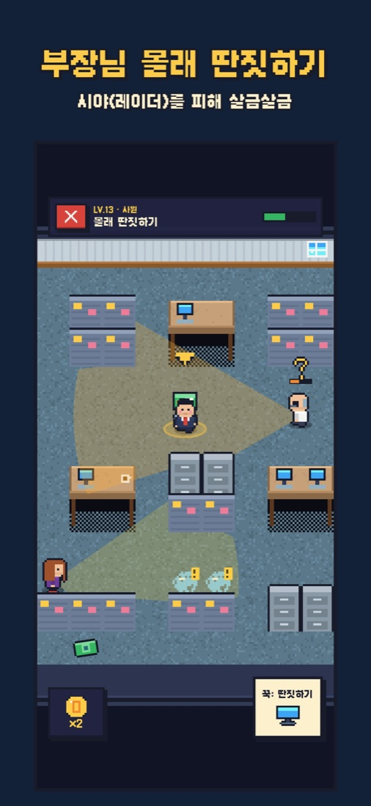
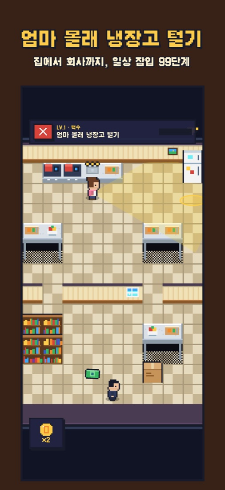

칼퇴 대작전
Sneaky Salaryman · 定時ダッシュ大作戦
오늘도 들키지 않고 칼퇴한다.
광고 없음 · 결제 없음 · 추적 없음



지원
엄마, 부장님, 수다쟁이 동료, CCTV, 그리고 사장님까지 — 눈에서 나오는 레이더를 피해 냉장고 털기부터 회식 탈출, 사장님 몰래 퇴근까지 99단계를 돌파하세요.
문의
버그 제보 시 기기 모델, iOS 버전, 레벨 번호를 함께 보내 주시면 빠르게 확인할 수 있습니다.
자주 묻는 질문
- 진행 기록은 어디에 저장되나요? 기기에 저장되며, iCloud를 사용 중이면 본인 iCloud에도 백업되어 새 기기에서 이어서 할 수 있습니다.
- '칼퇴 시간' 알림을 끄고 싶어요. iOS 설정 → 알림 → 칼퇴 대작전에서 끌 수 있습니다.
- 소리가 안 나요. 게임 설정의 효과음/배경음악이 켜져 있는지, 기기 볼륨을 확인해 주세요.
- 들킨 장면을 영상으로 공유하려면? 게임 설정에서 '들킨 순간 영상 공유'를 켜면 됩니다. 켜지 않아도 이미지 카드로 공유할 수 있습니다.
- 결제나 광고가 있나요? 없습니다. 의상과 책상 아이템은 모두 게임 속 월급으로 얻습니다.
Support
Sneak past Mom, your boss, chatty coworkers, CCTV — and the CEO — across 99 levels of everyday sneaking, from raiding the fridge to escaping the team dinner.
Contact
For bug reports, please include your device model, iOS version and the level number.
FAQ
- Where is my progress saved? On your device, and in your own iCloud if you use it, so you can continue on a new device.
- How do I turn off the clock-out reminder? iOS Settings → Notifications → Sneaky Salaryman.
- No sound? Check Sound / Music in the game's settings and your device volume.
- Sharing caught moments as video? Turn on "Share caught clips (video)" in the game's settings. You can always share an image card instead.
- Any purchases or ads? None. Every outfit and desk item is earned with in-game salary.
サポート
ママ、部長、おしゃべりな同僚、防犯カメラ、そして社長まで——視線をかいくぐって、冷蔵庫あさりから飲み会脱出、社長にバレずに退社まで99ステージに挑戦しよう。
お問い合わせ
不具合のご報告には、端末の機種・iOSバージョン・レベル番号を添えてください。
よくある質問
- 進行状況はどこに保存されますか？ 端末と、ご利用の場合はご本人のiCloudに保存され、新しい端末で続きから遊べます。
- 「定時だ！」通知をオフにしたい。 iOSの設定 → 通知 → 定時ダッシュ からオフにできます。
- 音が出ません。 ゲーム設定の効果音/BGMと端末の音量をご確認ください。
- バレた瞬間を動画でシェアするには？ ゲーム設定で「バレた瞬間を動画でシェア」をオンにしてください。オフでも画像カードでシェアできます。
- 課金や広告はありますか？ ありません。衣装やデスクアイテムはすべてゲーム内の給料で手に入ります。